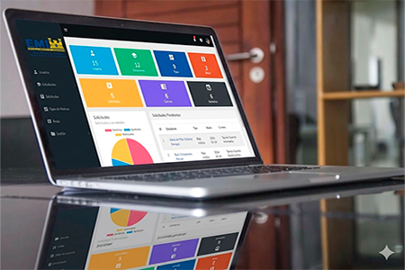
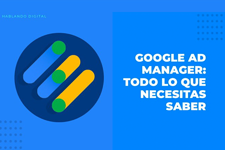
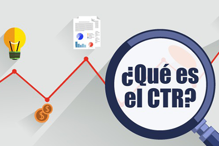

PROYECTOS DESTACADOS

Desarrollo de aplicación web para la solicitud de permisos
Diseño e implementación de una aplicación web dirigida a estudiantes para digitalizar y agilizar el proceso de solicitud de permisos, logrando una reducción del 50 % en los tiempos administrativos. Documentación técnica y elaboración de manuales de usuario para facilitar la adopción y comprensión del sistema
Ver en GitHubDesarrollo de un sitio web para automatizar reportes de campañas publicitarias
Desarrollo de un sitio web para automatizar reportes de campañas publicitarias, logrando una reducción del 30 % en los tiempos administrativos para la empresa EL DEBER
Ver en GitHubSOBRE MÍ
Profesional en Tecnologías de la Información con experiencia en desarrollo web y programación, y manejo de frameworks para aplicaciones web y metodologías de aseguramiento de la calidad. Con conocimientos en gestión de publicidad digital mediante ad servers, seguimiento y optimización de campañas, análisis de métricas de tráfico y generación de reportes. Experiencia en gestión de redes sociales y análisis de rendimiento digital. Enfocada en la optimización de procesos y mejora de sistemas digitales.
EXPERIENCIA
Empresa de comunicación social – EL DEBER SA
Trafficker Web de Marketing | Octubre 2025 – Presente
Gestión de campañas publicitarias en redes sociales, seguimiento y optimización de campañas, análisis de métricas de tráfico y generación de reportes. Experiencia en gestión de redes sociales y análisis de rendimiento digital.
Empresa de comunicación social – EL DEBER SA
Programadora Web y Community Manager | Mayo 2025 – Septiembre 2025
Actualización de métricas de redes sociales para documentación comercial, elaboración y análisis de reportes de campañas publicitarias digitales, programación y gestión de campañas en Google Ad Manager, publicación de contenido para campañas comerciales en redes sociales y desarrollo de un sistema automatizado para la generación de reportes con el objetivo de eliminar procesos manuales.
Empresa de comunicación social – EL DEBER SA
Pasante en programación – Área de TI | Febrero 2025 – Abril 2025
Desarrollo de un sistema automatizado para la generación de reportes, con el objetivo de eliminar procesos manuales.
EDUCACIÓN
Lenguas Modernas y Filología Hispánica | 2021 –Presente
Universidad Autónoma Gabriel René Moreno
Técnico Superior en Informática | 2021 –2024
Escuela Militar de Ingeniería UASC
Bootcamp Mujeres 260 | Noviembre 2023 –Julio 2024
Fundación Emprender Futuro, Embajada de los EE.UU. en Bolivia
Bachillerato | 2021
Colegio Don Bosco Central
GUÍAS Y TUTORIALES

Cómo implementar Google Ad Manager en un sitio web de Wordpress
Guía básica para integrar Google Ad Manager en WordPress y comenzar a gestionar espacios publicitarios.
Descargar PDF
Qué es el CTR y cómo entenderlo
Explicación sencilla del CTR y cómo interpretarlo para evaluar el rendimiento de campañas digitales.
Ver video en YouTube